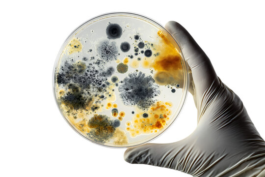

The Future of Carbon Computation
Carbon computation under light gating: irreversible trace and embodied metabolic cost, coupled to silicon decision systems as a new silicon–carbon symbiotic machine class.
Research writing from the AstroBiota Observatory: biological programming, symbiosis, witness, trace, consequence, and state memory in living systems.
A growing archive of independent research papers, governance frameworks, and biological reference artifacts exploring witness, trace, and consequence in living and machine systems.
Carbon computation under light gating: irreversible trace and embodied metabolic cost, coupled to silicon decision systems as a new silicon–carbon symbiotic machine class.
A conservation-first economic model built around preserving biological process rather than extracting biological objects — enabling continuous, non-destructive fermentation and real abundance.

A pilot invitation for mycelium and filamentous fungi teams: can history-dependent state conditioning reduce variance without changing DNA?

Proto-Lichen — a reproducible symbiotic morphology where tomentose fungal mycelium carries algal partners as a dry biofilm.